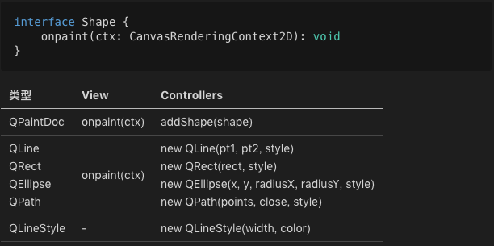
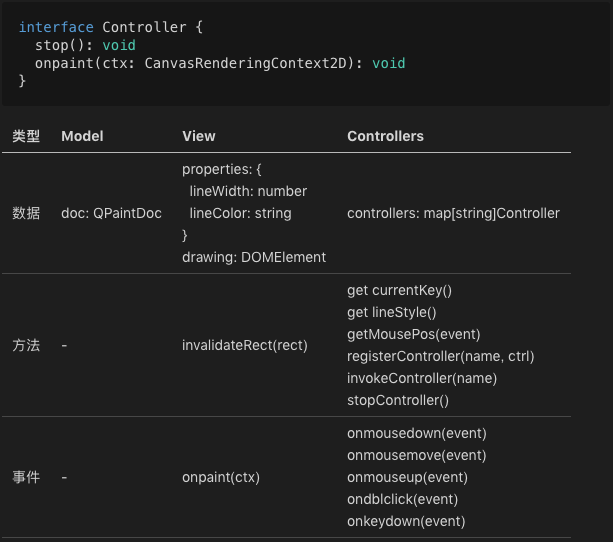
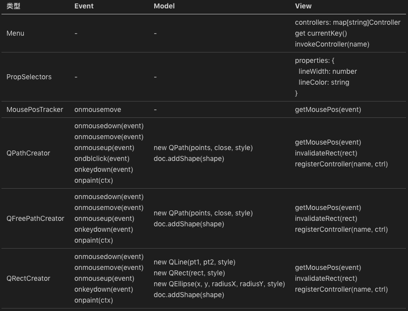
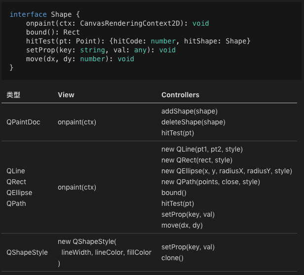
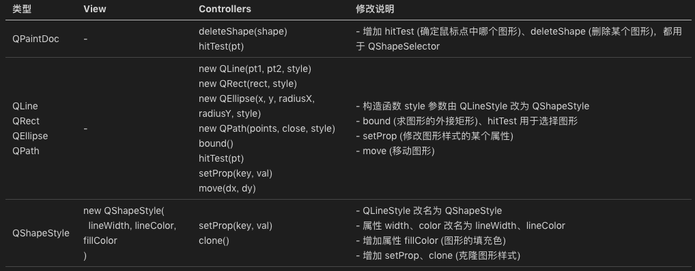
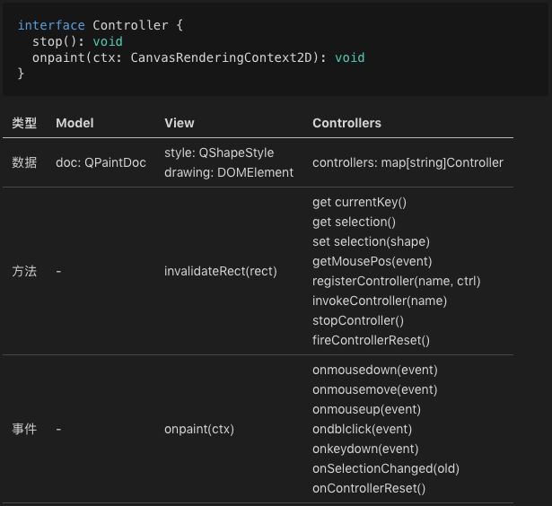
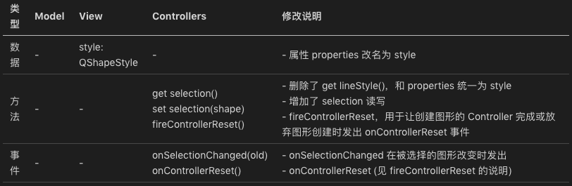
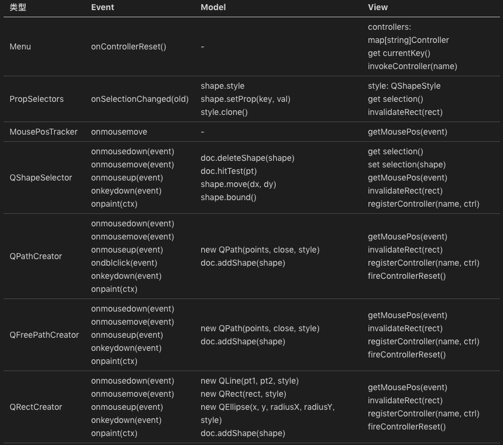
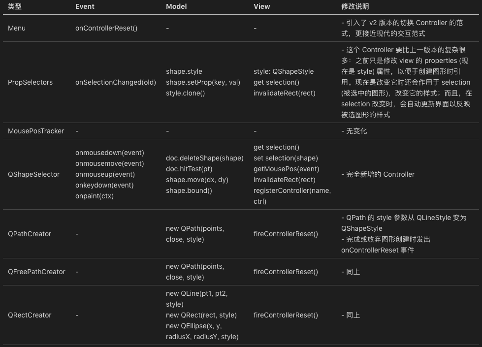

- 00 开篇词 怎样成长为优秀的软件架构师？.md.html
- 01 架构设计的宏观视角.md.html
- 02 大厦基石：无生有，有生万物.md.html
- 03 汇编：编程语言的诞生.md.html
- 04 编程语言的进化.md.html
- 05 思考题解读：如何实现可自我迭代的计算机？.md.html
- 06 操作系统进场.md.html
- 07 软件运行机制及内存管理.md.html
- 08 操作系统内核与编程接口.md.html
- 09 外存管理与文件系统.md.html
- 10 输入和输出设备：交互的演进.md.html
- 11 多任务：进程、线程与协程.md.html
- 12 进程内协同：同步、互斥与通讯.md.html
- 13 进程间的同步互斥、资源共享与通讯.md.html
- 14 IP 网络：连接世界的桥梁.md.html
- 15 可编程的互联网世界.md.html
- 16 安全管理：数字世界的守护.md.html
- 17 架构：需求分析 (上).md.html
- 18 架构：需求分析 (下) · 实战案例.md.html
- 19 基础平台篇：回顾与总结.md.html
- 20 桌面开发的宏观视角.md.html
- 21 图形界面程序的框架.md.html
- 22 桌面程序的架构建议.md.html
- 23 Web开发：浏览器、小程序与PWA.md.html
- 24 跨平台与 Web 开发的建议.md.html
- 25 桌面开发的未来.md.html
- 26 实战（一）：怎么设计一个“画图”程序？.md.html
- 27 实战（二）：怎么设计一个“画图”程序？.md.html
- 28 实战（三）：怎么设计一个“画图”程序？.md.html
- 29 实战（四）：怎么设计一个“画图”程序？.md.html
- 30 实战（五）：怎么设计一个“画图”程序？.md.html
- 31 辅助界面元素的架构设计.md.html
- 32 架构：系统的概要设计.md.html
- 33 桌面开发篇：回顾与总结.md.html
- 34 服务端开发的宏观视角.md.html
- 35 流量调度与负载均衡.md.html
- 36 业务状态与存储中间件.md.html
- 37 键值存储与数据库.md.html
- 38 文件系统与对象存储.md.html
- 39 存储与缓存.md.html
- 40 服务端的业务架构建议.md.html
- 41 实战（一）：“画图”程序后端实战.md.html
- 42 实战（二）：“画图”程序后端实战.md.html
- 43 实战（三）：“画图”程序后端实战.md.html
- 44 实战（四）：“画图”程序后端实战.md.html
- 45 架构：怎么做详细设计？.md.html
- 46 服务端开发篇：回顾与总结.md.html
- 47 服务治理的宏观视角.md.html
- 48 事务与工程：什么是工程师思维？.md.html
- 49 发布、升级与版本管理.md.html
- 50 日志、监控与报警.md.html
- 51 故障域与故障预案.md.html
- 52 故障排查与根因分析.md.html
- 53 过载保护与容量规划.md.html
- 54 业务的可支持性与持续运营.md.html
- 55 云计算、容器革命与服务端的未来.md.html
- 56 服务治理篇：回顾与总结.md.html
- 57 心性：架构师的修炼之道.md.html
- 58 如何判断架构设计的优劣？.md.html
- 59 少谈点框架，多谈点业务.md.html
- 60 架构分解：边界，不断重新审视边界.md.html
- 61 全局性功能的架构设计.md.html
- 62 重新认识开闭原则 (OCP).md.html
- 63 接口设计的准则.md.html
- 64 不断完善的架构范式.md.html
- 65 架构范式：文本处理.md.html
- 66 架构老化与重构.md.html
- 67 架构思维篇：回顾与总结.md.html
- 68 软件工程的宏观视角.md.html
- 69 团队的共识管理.md.html
- 70 怎么写设计文档？.md.html
- 71 如何阅读别人的代码？.md.html
- 72 发布单元与版本管理.md.html
- 73 软件质量管理：单元测试、持续构建与发布.md.html
- 74 开源、云服务与外包管理.md.html
- 75 软件版本迭代的规划.md.html
- 76 软件工程的未来.md.html
- 77 软件工程篇：回顾与总结.md.html
- 加餐 如何做HTTP服务的测试？.md.html
- 加餐 实战：“画图程序” 的整体架构.md.html
- 加餐 怎么保障发布的效率与质量？.md.html
- 热点观察 我看Facebook发币（上）：区块链、比特币与Libra币.md.html
- 热点观察 我看Facebook发币（下）：深入浅出理解 Libra 币.md.html
- 用户故事 站在更高的视角看架构.md.html
- 答疑解惑 想当架构师，我需要成为“全才”吗？.md.html
- 结束语 放下技术人的身段，用极限思维提升架构能力.md.html
- 课外阅读 从《孙子兵法》看底层的自然法则.md.html
- 捐赠
27 实战（二）：怎么设计一个“画图”程序？
你好，我是七牛云许式伟。
上一讲开始，我们进入了实战模式。从目前看到的反馈看，我的预期目标并没有达到。
我复盘了一下，虽然这个程序看起来比较简单，但是实际上仍然有很多需要交代而没有交代清楚的东西。
我个人对这个例子的期望是比较高的。因为我认为 “画图” 程序非常适合作为架构实战的第一课。“画图” 程序需求的可伸缩性非常大，完完全全是一个迷你小 Office 程序，很适合由浅及深去谈架构的演进。
所以我今天微调了一下计划，把服务端对接往后延后一讲，增加一篇 “实战（中）” 篇。这个“中”篇一方面把前面 “实战（上）” 篇没有交代清楚的补一下，另一方面对 “画图” 程序做一次需求的迭代。
MVP 版画图程序
先回到 “实战（上）” 篇。这个版本对画图程序来说，基本上是一个 MVP 版本：只能增加新图形，没法删除，也没法修改。
怎么做？我们先看 Model 层，它的代码就是一个 dom.js 文件。从数据结构来说，它是一棵以 QPaintDoc 为根的 DOM 树。这个 DOM 树只有三级：Document -> Shape -> LineStyle。具体细节可以参阅下表：

这个表列出的是 Model 和 View、Controllers 的耦合关系：Model 都为它们提供了什么？可以看出，View 层当前对 Model 层除了绘制（onpaint），没有其他任何需求。而各个 Controller，对 Model 的需求看起来似乎方法数量不少，但是实质上目的也只有一个，那就是创建图形（addShape）。
我们再看 View 层。它的代码主要是一个 index.htm 文件和一个 view.js 文件。View 层只依赖 Model 层，并且只依赖一个 doc.onpaint 函数。所以我们把关注点放在 View 自身的功能。
View 层只有一个 QPaintView 类。我们将其功能分为了三类：属于 Model 层职责相关的，属于 View 自身职责相关的，以及为 Controller 层服务的，得到下表。

最后，我们来看 Controller 层。Controller 层的文件有很多，这还是一些 Controller 因为实现相近被合并到一个文件，如下所示。
- Menu, PropSelectors, MousePosTracker： accel/menu.js
- Create Path：creator/path.js
- Create FreePath：creator/freepath.js
- Create Line, Rect, Ellipse, Circle： creator/rect.js
Controller 位于 MVC 的最上层，我们对它的关注点就不再是它的规格本身，也没人去调用它的方法。所以我们把关注点放在了每个 Controller 都怎么用 Model 和 View 的。
我们列了个表，如下。注意 Controller 对事件（Event）的使用从 View 中单独列出来了。

通过以上三张表对照着看，可以清晰看出 Model、View、Controllers 是怎么关联起来的。
改进版的画图程序
MVP 版本的画图程序，用着就会发现不好用，毕竟图形创建完就没法改了。所以我们打算做一个新版本出来，功能上有这样一些改进。
- 选择一个图形，允许删除、移动或者对其样式进行修改。
- 图形样式增加 fillColor（填充色）。
- 更加现代的交互范式：默认处于 ShapeSelector 状态，创建完图形后自动回到此状态。
- 选择图形后，界面上的当前样式自动更新为被选图形的样式。
怎么改我们的程序？
完整的差异对比，请参见：
下面，我们将详细讲解这些修改背后的思考。
我们先看 Model 层，新的规格见下表。

为了方便大家理解，我们做了一个 Model 的 ChangeNotes 表格，如下：

大部分是新功能的增加，不提。我们重点关注一个点：QLineStyle 改名为 QShapeStyle，且其属性 width、color 被改名为 lineWidth、lineColor。这些属于不兼容修改，相当于做了一次小重构。
重构关键是要及时处理，把控质量。尤其对 JavaScript 这种弱类型语言，重构的心智负担较大。为了保证质量仍然可控，最好辅以足够多的单元测试。
这也是我个人会更喜欢静态类型语言的原因，重构有任何遗漏，编译器会告诉你哪里漏改了。当然，这并不意味着单元测试可以省略，对每一门语言来说，自动化的测试永远是质量保障的重要手段。
话题回到图形样式。最初我们 new QLine、QRect、QEllipse、QPath 的时候，传入的最后一个参数是 QLineStyle，从设计上这是一次失误，这意味着后面这些构造还是都需要增加更多参数如 QFillStyle 之类。
把最后一个参数改为 QShapeStyle，这从设计上就完备了。后面图形样式就算有更多的演进，也会集中到 QShapeStyle 这一个类上。
当前 QShapeStyle 的数据结构是这样的：
class QShapeStyle {
lineWidth: number
lineColor: string
fillColor: string
}
那么，这是合理的么？未来潜在的演进是什么？
对需求演进的推演，关键是眼光看多远。当前各类 GDI 对 LineStyle、FillStyle 支持都非常丰富。所以如果作为一个实实在在要去迭代的画图程序来说，上面这个 QShapeStyle 必然还会面临一次重构。变成如下这个样子：
class QLineStyle {
width: number
color: string
}
class QFillStyle {
color: string
}
class QShapeStyle {
line: any
fill: any
}
为什么 QShapeStyle 里面的 line 不是 QLineStyle，fill 不是 QFillStyle，而是 any 类型？因为它们都只是简单版本的线型样式和填充样式。
举个例子，在 GDI 系统中，FillStyle 往往还可以是一张图片平铺，也可以是多个颜色渐变填充，这些都无法用 QFillStyle 来表示。所以这里的 QFillStyle 更好的叫法也许是 QSimpleFillStyle。
聊完了 Model 层，我们再来看 View 层。

View 层的变化不大。为了给大家更直观的感觉，我这里也列了一个 ChangeNotes 表格，如下：

其中，properties 改名为 style，以及删除了 get lineStyle()，和 properties 统一为 style。这个和我上面说的 Model 层的小重构相关，并不是本次新版本的功能引起的。
所以 View 层真正的变化是两个：
- 引入了 selection，当前只能单选一个 shape；在 selection 变化时会发出 onSelectionChanged 事件；
- 引入了 onControllerReset 事件，它在 Controller 完成或放弃图形的创建时发出。
引入 selection 比较常规。View 变复杂了通常都会有 selection，唯一需要考虑的是 selection 会有什么样的变化，对于 Office 类程序，如果 selection 只允许是单 shape 这不太合理，但我们这里略过，不进行展开。
我们重点谈 onControllerReset 事件。
onControllerReset 事件是创建图形的 Controller（例如 QPathCreator、QRectCreator 等）发出，并由 Menu 这个 Controller 接收。
这就涉及了一个问题：类似情况还会有多少？以后是不是还会有更多的事件需要在 Controller 之间传递，需要 View 来中转的？
这个问题就涉及了 View 层事件机制的设计问题。和这个问题相关的有：
- 要不要支持任意的事件；
- 监听事件是支持单播还是多播？
从最通用的角度，肯定是支持任意事件、支持多播。比如我们定义一个 QEventManager 类，规格如下。
class QEventManager {
fire(eventName: string, params: ...any): void
addListener(eventName: string, handler: Handler): void
removeListener(eventName: string, handler: Handler): void
}
但是，View 的事件机制设定，需要在通用性与架构的可控性之平衡。一旦 View 聚合了这个 QEventManager，通用是通用了，但是 Controller 之间会有什么样的事件飞来飞去，就比较难去从机制上把控了。
代码即文档。如果能够用代码约束的事情，最好不要在文档中来约束。
所以，就算是我们底层实现 QEventManager 类，我个人也不倾向于在 View 的接口中直接将它暴露出去，而是定义更具体的 fireControllerReset、 onControllerReset/offControllerReset 方法，让架构的依赖直观化。
具体代码看起来是这样的：
class QPaintView {
constructor() {
this._eventManager = new QEventManager()
}
onControllerReset(handler) {
this._eventManager.addListener("onControllerReset", handler)
}
offControllerReset(handler) {
this._eventManager.removeListener("onControllerReset", handler)
}
fireControllerReset() {
this._eventManager.fire("onControllerReset")
}
}
聊完了 View 层，我们接着聊 Controller 层。我们也把每个 Controller 怎么用 Model 和 View 列了个表，如下。
- Menu, PropSelectors, MousePosTracker： accel/menu.js
- ShapeSelector：accel/select.js
- Create Path：creator/path.js
- Create FreePath：creator/freepath.js
- Create Line, Rect, Ellipse, Circle： creator/rect.js

内容有点多。为了更清楚地看到差异，我们做了 ChangeNotes 表格，如下：

首先，Menu、QPathCreator、QFreePathCreator、QRectCreator 的变更，主要因为引入了新的交互范式导致，我们为此引入了 onControllerReset 事件。还有一个变化是 QLineStyle 变 QShapeStyle，这一点前面已经详细讨论，不提。
所以 Controller 层的变化其实主要是两个。
其一，PropSelectors。这个 Controller 要比上一版本的复杂很多：之前只是修改 View 的 properties (现在是 style) 属性，以便于创建图形时引用。现在是改变它时还会作用于 selection (被选中的图形)，改变它的样式；而且，在 selection 改变时，会自动更新界面以反映被选图形的样式。
其二，QShapSelector。这是新增加的 Controller，支持选择图形，支持删除、移动被选择的图形。
通过这次的需求迭代我们可以看出，目前 Model、View、Controller 的分工，可以使需求的分解非常正交。
Model 只需要考虑需求导致的数据结构演进，并抽象出足够自然的业务接口。View 层非常稳定，主要起到各类角色之间的桥接作用。Controller 层每个 Controller 各司其职，彼此之间不会受到对方需求的干扰。
结语
今天我们结合“画图” 程序重新梳理了一遍 MVC 架构。并且我们更进一步，通过对画图程序进行一次需求演进，来观察 MVC 架构各个角色对需求变更的敏感性。需要再次强调的是，虽然我们基于 Web 开发，但是我们当前给出的画图程序本质上还是单机版的。
如果你对今天的内容有什么思考与解读，欢迎给我留言，我们一起讨论。下一讲我们将继续实战一个联网版本的画图程序。
如果你觉得有所收获，也欢迎把文章分享给你的朋友。感谢你的收听，我们下期再见。
© 2019 - 2023 Liangliang Lee. Powered by gin and hexo-theme-book.